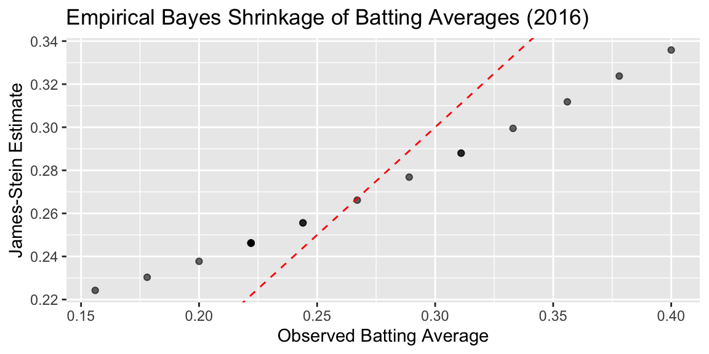

library(plyr)
# Source: "http://www.electoral-vote.com/evp2012/Pres/pres_polls.csv"
election.2012 = read.csv("../data/pres_polls.csv")
# Remove a pollster: elect2012 <- election.2012[!grepl('Rasmussen', election.2012$Pollster),]
elect2012 <- election.2012
# Aggregrate the data
elect2012 <- ddply(elect2012, .(state), subset, Day == max(Day))
elect2012 <- ddply(elect2012, .(state), summarise, R.pct = mean(GOP), O.pct = mean(Dem), EV = mean(EV))12 Theory of AI
We use observed input-output pairs \((x_i,y_i)\) to learn a function \(f\) that maps \(x_i\) to \(y_i\). The goal is to learn a function \(f\) that generalizes well to unseen data. We can measure the quality of a function \(f\) by its risk, which is the expected loss of \(f\) on a new input-output pair \((x,y)\):
\[
R(f) = \sum_{i=1}^N \left [ l(y_i,f(x_i)) \right ] + \lambda \phi(f)
\] where \(L\) is a loss function, \(\phi\) is a regularization function, and \(\lambda\) is a regularization parameter. The loss function \(L\) measures the difference between the output of the function \(f\) and the true output \(y\). The regularization function \(\phi\) measures the complexity of the function \(f\). The regularization parameter \(\lambda\) controls the tradeoff between the loss and the complexity.
When \(y\in R\) is numeric, we use the squared loss \(l(y,f(x)) = (f(x)-y)^2\). When \(y\in \{0,1\}\) is binary, we use the logistic loss \(l(y,f(x)) = \log(1+\exp(-yf(x)))\).
Here are a few important considerations when building predictive models:
1. Model Selection: Choosing the right model for the relationship between \(x\) and \(y\) is crucial and involves navigating a fundamental trade-off between model complexity and generalization ability. If the chosen model is too simple (e.g., linear regression when the true relationship is polynomial), it might underfit the data and fail to capture important relationships, leading to high bias and poor performance on both training and test data. Conversely, a model that is too complex (e.g., high-degree polynomials or deep neural networks with insufficient data) might overfit the data by memorizing training examples rather than learning the underlying pattern, resulting in excellent training performance but poor generalization to unseen examples. This problem becomes even more complex when dealing with non-linear relationships, high-dimensional data, or noisy data, where the optimal model complexity is not immediately obvious and may require systematic experimentation with different model architectures, regularization techniques, and hyperparameter tuning to find the right balance between capturing the true signal while avoiding noise.
2. Overfitting and Underfitting: Overfitting occurs when the model fits the training data too closely, capturing not only the true underlying relationship but also random noise and idiosyncrasies specific to the training dataset. This phenomenon typically manifests when a model has too many parameters relative to the amount of training data available, allowing it to essentially “memorize” the training examples rather than learning the generalizable patterns. The model may achieve excellent performance metrics on the training data (low training error) but will perform poorly on new, unseen data (high generalization error). This is because the model has learned to recognize specific noise patterns in the training data that don’t exist in the broader population. Common signs of overfitting include a large gap between training and validation/test performance, or performance that improves on training data while degrading on validation data during training iterations.
Underfitting occurs when the model is too simple and fails to capture the true relationship between x and y, often due to insufficient model complexity or inadequate training. This can happen when using a model that is inherently too simple for the problem at hand (e.g., linear regression for a highly non-linear relationship), when the model hasn’t been trained for enough iterations, or when regularization is applied too aggressively. Underfitting results in poor performance on both training and test data, as the model lacks the capacity to learn the underlying patterns in the data. The model essentially misses important features or relationships that are necessary for accurate predictions. Unlike overfitting, underfitting typically shows similar poor performance across training, validation, and test sets, indicating that the model is not capturing the signal in the data regardless of the dataset.
3. Data Quality and Quantity: The accuracy of predictions heavily relies on the quality and quantity of the available data. If the data is noisy, inaccurate, or incomplete, it can lead to misleading predictions. A sufficient amount of data is also crucial to ensure the model can learn the underlying relationship effectively. Insufficient data can result in underfitting and poor generalization.
Data quality issues can manifest in various forms, including missing values, inconsistent formatting, labeling errors, and biased sampling. These problems are particularly acute in machine learning applications where large volumes of labeled data are required for training. To address these challenges, companies have emerged that specialize in data quality improvement and annotation services.
Companies like Scale AI and Toloka provide platforms that help organizations improve data quality through human-in-the-loop annotation and validation processes. These platforms employ large networks of human annotators who can perform tasks such as image labeling, text classification, data validation, and quality control. Scale AI, for example, offers services for creating high-quality training datasets through human annotation, with built-in quality control mechanisms that include multiple annotators per task and consensus-based validation. Their platform can handle various data types including images, text, and video, making it suitable for computer vision, natural language processing, and other AI applications.
Toloka, similarly, provides a crowdsourcing platform that connects businesses with a global network of contributors who can perform data labeling, content moderation, and quality assessment tasks. Their platform includes quality control features such as skill-based routing, where tasks are assigned to annotators based on their demonstrated expertise, and dynamic overlap, where multiple workers verify the same data to ensure accuracy.
These platforms help address several key data quality challenges: they can identify and correct labeling errors through consensus mechanisms, handle missing data through targeted collection efforts, and ensure consistency in data formatting and annotation standards. By leveraging human expertise at scale, these services enable organizations to create more reliable training datasets, which in turn leads to better-performing machine learning models and more accurate predictions.
4. Model Explainability: In many applications, it is crucial to understand how the model arrives at its predictions. This is particularly important in areas like healthcare or finance, where transparency and interpretability are essential. Some models, particularly complex ones like deep neural networks, can be difficult to interpret, making it challenging to understand the rationale behind their predictions. However, modern machine learning has developed several techniques to address this challenge and make complex models more interpretable.
The importance of explainability extends beyond mere curiosity about model behavior. In healthcare applications, doctors need to understand why a model recommended a particular diagnosis or treatment plan to make informed decisions and maintain trust in the system. A model that predicts a patient has a 90% chance of having cancer but cannot explain which symptoms or test results led to this conclusion would be of limited clinical value. Similarly, in financial services, regulators require explanations for credit decisions to ensure compliance with fair lending laws and to prevent discriminatory practices. When a loan application is denied, both the applicant and regulatory bodies need to understand the specific factors that influenced this decision.
In legal and compliance contexts, explainability becomes a legal requirement. The European Union’s General Data Protection Regulation (GDPR) includes a “right to explanation” that allows individuals to request information about automated decisions that affect them. This has created a legal imperative for organizations to develop explainable AI systems. In criminal justice applications, where AI systems might be used for risk assessment or sentencing recommendations, the stakes are particularly high. Judges, lawyers, and defendants all need to understand how these systems arrive at their conclusions to ensure fair and just outcomes.
One prominent approach is the use of interpretable surrogate models, such as LIME (Local Interpretable Model-agnostic Explanations) and SHAP (SHapley Additive exPlanations). These methods work by approximating the complex model’s behavior in the vicinity of a specific prediction using simpler, more interpretable models like linear regression or decision trees. LIME, for instance, creates local explanations by sampling points around the prediction of interest and fitting a linear model to explain the model’s behavior in that neighborhood. This allows us to understand which features contributed most to a particular prediction, even for complex models like deep neural networks.
Another powerful technique is attention mechanisms, which have become increasingly popular in natural language processing and computer vision. Attention mechanisms allow models to “focus” on specific parts of the input when making predictions, providing a form of built-in interpretability. For example, in image classification tasks, attention maps can highlight which regions of an image the model is focusing on when making its prediction, making it easier to understand the model’s decision-making process.
Gradient-based methods offer another approach to model interpretability. Techniques like Grad-CAM (Gradient-weighted Class Activation Mapping) use gradients to identify which parts of the input are most important for the model’s prediction. By computing the gradient of the model’s output with respect to the input features, these methods can create heatmaps that show which features or regions contributed most to the final prediction.
For tree-based models like random forests and gradient boosting machines, built-in feature importance measures provide natural interpretability. These methods can rank features based on their contribution to the model’s predictive performance, offering insights into which variables are most important for making predictions.
Model distillation techniques represent another approach, where a complex model (the teacher) is used to train a simpler, more interpretable model (the student) that mimics the teacher’s behavior. The student model, being simpler, is easier to interpret while maintaining much of the teacher’s predictive performance.
Finally, counterfactual explanations provide a different type of interpretability by showing what changes to the input would be needed to change the model’s prediction. For example, if a loan application is rejected, a counterfactual explanation might show that the application would have been approved if the applicant’s income were $10,000 higher or if their credit score were 50 points better.
These modern interpretability techniques have made it possible to understand and explain the behavior of even the most complex models, addressing the “black box” problem that has historically limited the adoption of advanced machine learning methods in critical applications where transparency is essential.
5. Computational Cost: Training and using prediction models can be computationally expensive, especially for complex models with large datasets. This can limit their applicability in resource-constrained environments. Finding a balance between model complexity, accuracy, and computational cost is critical for practical applications.
The computational demands of machine learning models have been significantly addressed through the development of specialized hardware, particularly Graphics Processing Units (GPUs). Originally designed for rendering graphics in video games, GPUs have become essential for deep learning due to their parallel processing architecture. Unlike traditional Central Processing Units (CPUs) that process tasks sequentially, GPUs can perform thousands of mathematical operations simultaneously, making them ideal for the matrix multiplications and tensor operations that are fundamental to neural network training. This parallel processing capability has reduced training times from weeks to hours or even minutes for many deep learning models, democratizing access to advanced machine learning techniques.
However, the computational cost challenge extends beyond just training to the deployment phase, where models need to run efficiently in production environments. This has led to the emergence of edge computing as a crucial solution. Edge computing involves processing data and running models closer to where the data is generated, rather than sending everything to centralized cloud servers. This approach offers several advantages for machine learning applications: reduced latency for real-time predictions, lower bandwidth costs by processing data locally, and improved privacy by keeping sensitive data on local devices.
Edge computing is particularly important for applications requiring real-time decision making, such as autonomous vehicles, industrial IoT systems, and mobile applications. For example, a self-driving car cannot afford the latency of sending sensor data to a cloud server and waiting for predictions to return; it needs to process information and make decisions locally within milliseconds. Similarly, smart manufacturing systems use edge computing to monitor equipment and predict maintenance needs in real-time without the delays associated with cloud processing.
Quantization and lower precision calculations have emerged as powerful techniques for reducing computational costs while maintaining model performance. Traditional neural networks use 32-bit floating-point numbers (FP32) for all calculations, which provides high precision but requires significant computational resources and memory. Quantization reduces the precision of these numbers, typically to 16-bit (FP16), 8-bit integers (INT8), or even 4-bit integers (INT4), dramatically reducing both memory usage and computational requirements. For example, converting from FP32 to INT8 can reduce memory usage by 75% and computational cost by 2-4x, while often maintaining acceptable accuracy levels. This is particularly valuable for deployment on edge devices with limited resources, such as smartphones, IoT devices, and embedded systems. Modern hardware, including specialized AI accelerators like Google’s Tensor Processing Units (TPUs) and NVIDIA’s Tensor Cores, are specifically designed to handle these lower precision calculations efficiently, further reducing the computational cost barrier.
The trade-offs between computational cost and model performance are becoming increasingly sophisticated. Techniques like model pruning, which removes unnecessary connections from neural networks, can create smaller, faster models. Knowledge distillation allows large, complex models to transfer their knowledge to smaller, more efficient models that can run on resource-constrained devices.
These developments have created a spectrum of deployment options, from powerful cloud-based systems that can run the most complex models to lightweight edge devices that can perform basic predictions locally. The choice depends on the specific requirements of the application, including latency requirements, accuracy needs, privacy concerns, and cost constraints. As hardware continues to improve and optimization techniques become more sophisticated, the computational cost barrier to deploying machine learning models continues to decrease, opening up new possibilities for AI applications in previously inaccessible domains.
6. Ethical Considerations: Predictions can have significant real-world consequences, raising ethical concerns about bias, fairness, and potential misuse. It is crucial to consider the potential harms and unintended consequences of predictions and implement safeguards to mitigate them.
The ethical implications of predictive models have become increasingly prominent as these systems are deployed in critical domains such as healthcare, criminal justice, employment, and financial services. One of the most significant concerns is algorithmic bias, which can perpetuate or amplify existing societal inequalities. For example, facial recognition systems have been shown to have higher error rates for people of color, potentially leading to wrongful arrests or surveillance. Similarly, hiring algorithms trained on historical data may perpetuate gender or racial biases present in past hiring decisions, creating a feedback loop that reinforces discrimination.
Fairness in machine learning has emerged as a critical research area, with multiple definitions and approaches to ensure equitable treatment across different demographic groups. Statistical parity, equalized odds, and individual fairness are among the various fairness metrics that can be applied depending on the specific context and requirements of the application. However, achieving fairness often involves trade-offs with model accuracy, and different fairness definitions may conflict with each other, requiring careful consideration of which definition is most appropriate for a given use case.
The potential for misuse of predictive models is another significant concern. Models designed for legitimate purposes can be repurposed for harmful applications, such as using facial recognition for mass surveillance or employing predictive policing algorithms that disproportionately target certain communities. Additionally, the increasing sophistication of deepfake technology, which uses predictive models to generate realistic but fake images, videos, or audio, raises concerns about misinformation and manipulation.
Privacy concerns arise when predictive models require access to sensitive personal data. The collection, storage, and processing of personal information for training and deploying these models can violate individual privacy rights and create risks of data breaches. Differential privacy techniques, which add carefully calibrated noise to data or model outputs, have emerged as a promising approach to protect individual privacy while maintaining model utility.
Transparency and accountability are essential for addressing ethical concerns. Organizations deploying predictive models must be able to explain their decisions and be held accountable for any harms that result. This includes maintaining audit trails, implementing human oversight mechanisms, and establishing clear procedures for addressing complaints or errors. The concept of “algorithmic impact assessments” has been proposed as a framework for evaluating the potential social impacts of automated decision-making systems before deployment.
Regulatory frameworks are evolving to address these ethical challenges. The European Union’s General Data Protection Regulation (GDPR) includes provisions for automated decision-making and profiling, while various jurisdictions are developing specific regulations for AI systems. These regulations often require transparency, human oversight, and the ability to contest automated decisions.
Technical approaches to addressing ethical concerns include adversarial training to reduce bias, interpretability techniques to increase transparency, and robust testing procedures to identify potential harms before deployment. Regular monitoring and updating of deployed models is also crucial, as societal norms and legal requirements evolve over time.
Addressing these challenges requires careful consideration of the specific problem, selection of appropriate techniques, and continuous evaluation and improvement of the prediction model. It also requires collaboration between technical experts, domain specialists, ethicists, and stakeholders to ensure that predictive models serve the public good while minimizing potential harms.
12.0.1 Prediction Accuracy
After we fit our model and find the optimal value of the parameter \(\theta\), denoted by \(\hat \theta\), we need to evaluating the accuracy of a predictive model. It involves comparing the model’s predictions to actual outcomes. We can simply use the value of the loss function from the training step to evaluate model’s predictive power. However, this only tells us how well the model fits the training data. It doesn’t tell us how well the model will perform on unseen data. To evaluate the model’s performance on unseen data, we need to use a different approach.
The most common approach is to split the data into training and test sets. The training set is used to train the model, while the test set is used to evaluate its performance. This approach is known as the train-test split. It is a simple and effective way to evaluate how well model predicts unseen for unseen inputs.
Another approach is to use cross-validation. It involves splitting the data into smaller subsets and using them to train and test the model multiple times. When our sample size is small, this allows for a more robust estimate of the model’s performance than simply splitting the data into a single training and test set. For small data sets, simple train-test split approach will be sensitive to choice of test samples, thus the estimated predicted performance will be unstable (high variance). Cross-validation helps to reduce this variance by averaging the performance across multiple folds. This makes the performance estimate more robust and less sensitive to the choice of test samples.
Cross-validation involves several steps:
- Split the data: The data is randomly divided into \(k\) equal-sized chunks (folds).
- Train and test the model: For each fold, the model is trained on \(k-1\) folds and tested on the remaining fold. This process is repeated \(k\) times, ensuring each fold is used for testing once.
- Evaluate the model: The performance of the model is evaluated on each fold using a chosen metric, such as accuracy, precision, recall, or F1 score.
- Report the average performance: The average of the performance metrics across all k folds is reported as the final estimate of the model’s performance.
A common choice for \(k\) is 5 or 10. When \(K=n\), this is known as leave-one-out cross-validation. This method can be computationally expensive but is less likely to overfit the data. Stratified cross-validation ensures that each fold contains approximately the same proportion of each class as in the entire dataset. This is important for imbalanced datasets where one class is significantly larger than the others.
Notice, that cross-validation requires re-training the model multiple times, which can be computationally expensive. Thus, for large datasets, we typically prefer simple train-test split. However, for small datasets, cross-validation can provide a more robust estimate of the model’s performance.
Either method is limited to evaluating the model’s performance on data that is available to the modeler. What if we start using our model on data that is different from the training and test sets? Unlike in physics, when a model represents a law that is universal, in data science, we are dealing with data that is generated by a process that is not necessarily universal. For example, if we are building a model to predict the price of a house, we can train and test the model on data from a specific city. However, if we start using the model to predict the price of a house in a different city, the model might not perform as well. This is because the data from the new city might be different from the data used to train and test the model. This is known as the problem of generalization. It refers to the ability of a model to perform well on data that is different from the training and test sets.
Evaluation Metrics for Regression
There are several metrics that can be used to evaluate the performance of regression models. We can simply use the same function as we use for fitting the model, e.g. least squares \[ \text{MSE} = \dfrac{1}{m}\sum_{i=1}^n (y_i -\hat y_i)^2, \] here \(\hat y_i\) is the predicted value of the i-th data point by the model \(\hat y_i = f(x_i,\hat\theta)\) and \(m\) is the total number of data points used for the evaluation. This metric is called the Mean Squared Error (MSE). It is the average squared difference between the actual and predicted values. Lower MSE indicates better model performance, as it means the model’s predictions are closer to the actual values.
A slight variation of this metric is Root Mean Squared Error (RMSE). This is the square root of MSE and is also commonly used due to its units being the same as the target variable. \[ \text{RMSE} = \sqrt{\text{MSE}}. \] However, MSE is sensitive to outliers, as it squares the errors, giving more weight to large errors. This can lead to misleading results when the data contains outliers.
Median Absolute Error (MAE) solves the sensetivity to the outliers problem. It is the median of the absolute errors, providing a more robust measure than MAE for skewed error distributions \[ \text{MAE} = \dfrac{1}{m}\sum_{i=1}^n |y_i -\hat y_i|. \] A variation of it is the Mean Absolute Percentage Error (MAPE), which is the mean of the absolute percentage errors \[ \text{MAPE} = \dfrac{1}{m}\sum_{i=1}^n \left | \dfrac{y_i -\hat y_i}{y_i} \right |. \]
Alternative way to measure the predictive quility is to use the coefficient of determination, also known as the R-squared value, which measures the proportion of variance in the target variable that is explained by the model. Higher R-squared indicates better fit. However, R-squared can be misleading when comparing models with different numbers of features. R-squared is defined as follows \[ R^2 = 1 - \dfrac{\sum_{i=1}^n (y_i -\hat y_i)^2}{\sum_{i=1}^n (y_i -\bar y_i)^2}, \] where \(\bar y_i\) is the mean of the target variable. R-squared is a relative measure of fit, so it can be used to compare different models. However, it is not an absolute measure of fit, so it cannot be used to determine whether a model is good or bad. It is also sensitive to the number of features in the model, so it cannot be used to compare models with different numbers of features.
Finally, we can use graphics to evaluate the model’s performance. For example, we can scatterplot the actual and predicted values of the target variable to visually compare them. We can also plot the histogram of a boxplot of the residuals (errors) to see if they are normally distributed.
Evaluation Metrics for Classification
Accuracy is the most fundamental metric used to evaluate models. It is defined as the ratio of the number of correct predictions to the total number of predictions. The formula is given by \[\text{Accuracy} = \frac{\text{TP+TN}}{\text{TP+TN+FP+FN}},\] where TP, TN, FP, and FN are the numbers of true positives, true negatives, false positives, and false negatives, respectively. However, it can be misleading for imbalanced datasets where one class is significantly larger than others. For example, if 95% of the data belongs to one class, a model that always predicts this class will be 95% accurate, even though it’s not very useful.
A more comprehensive understanding of model performance can be achieved by calculaitng the sensitivity (a.k.a precision) and specificity (a.k.a. recall) as well as confusion matrix discussed in Section 2.4. The confusion matrix is
| Actual/Predicted | Positive | Negative |
|---|---|---|
| Positive | TP | FN |
| Negative | FP | TN |
Precision measures the proportion of positive predictions that are actually positive. It is useful for evaluating how good the model is at identifying true positives. Recall measures the proportion of actual positives that are correctly identified by the model. It is useful for evaluating how good the model is at not missing true positives.
Then we can use those to calculate F1 Score which is is a harmonic mean of precision and recall, providing a balanced view of both metrics. Higher F1 score indicates better overall performance. If misclassifying certain instances is more costly than others, weighted metrics account for these different costs. For imbalanced datasets, metrics like F1 score or balanced accuracy are important to avoid misleading interpretations.
Sometimes, we use multiple metrics to get a comprehensive assessment of the model’s performance. Additionally, consider comparing the model’s performance to a baseline model or other existing models for the same task. Sometimes, it is hard to beat a “coin flip” classification model, when the model predicts the class randomly with equal probability. In regression, a simple baseline model is \(f(x_i) = \bar y\), which is the mean of the target variable.
12.0.2 Some Examples of Prediction Problems
Example 12.1 (Obama Elections) Elections 2012: Bayes and Nate Silver
knitr::kable(elect2012[1:25,], caption = "Election 2012 Data",longtable=TRUE)
knitr::kable(elect2012[26:51,], caption = "Election 2012 Data",longtable=TRUE)| state | R.pct | O.pct | EV |
|---|---|---|---|
| Alabama | 61 | 38 | 9 |
| Alaska | 55 | 42 | 3 |
| Arizona | 54 | 44 | 11 |
| Arkansas | 61 | 37 | 6 |
| California | 38 | 59 | 55 |
| Colorado | 47 | 51 | 9 |
| Connecticut | 40 | 58 | 7 |
| D.C. | 7 | 91 | 3 |
| Delaware | 40 | 59 | 3 |
| Florida | 49 | 50 | 29 |
| Georgia | 53 | 45 | 16 |
| Hawaii | 28 | 71 | 4 |
| Idaho | 65 | 33 | 4 |
| Illinois | 41 | 57 | 20 |
| Indiana | 54 | 44 | 11 |
| Iowa | 47 | 52 | 6 |
| Kansas | 60 | 38 | 6 |
| Kentucky | 61 | 38 | 8 |
| Louisiana | 58 | 41 | 8 |
| Maine | 41 | 56 | 4 |
| Maryland | 37 | 62 | 10 |
| Massachusetts | 38 | 61 | 11 |
| Michigan | 45 | 54 | 16 |
| Minnesota | 45 | 53 | 10 |
| Mississippi | 56 | 44 | 6 |
| state | R.pct | O.pct | EV | |
|---|---|---|---|---|
| 26 | Missouri | 54 | 44 | 10 |
| 27 | Montana | 55 | 41 | 3 |
| 28 | Nebraska | 61 | 38 | 5 |
| 29 | Nevada | 46 | 52 | 6 |
| 30 | New Hampshire | 46 | 52 | 4 |
| 31 | New Jersey | 41 | 58 | 14 |
| 32 | New Mexico | 43 | 53 | 5 |
| 33 | New York | 36 | 63 | 29 |
| 34 | North Carolina | 51 | 48 | 15 |
| 35 | North Dakota | 59 | 39 | 3 |
| 36 | Ohio | 48 | 50 | 18 |
| 37 | Oklahoma | 67 | 33 | 7 |
| 38 | Oregon | 43 | 54 | 7 |
| 39 | Pennsylvania | 47 | 52 | 20 |
| 40 | Rhode Island | 36 | 63 | 4 |
| 41 | South Carolina | 55 | 44 | 9 |
| 42 | South Dakota | 58 | 40 | 3 |
| 43 | Tennessee | 60 | 39 | 11 |
| 44 | Texas | 57 | 41 | 38 |
| 45 | Utah | 73 | 25 | 6 |
| 46 | Vermont | 31 | 67 | 3 |
| 47 | Virginia | 48 | 51 | 13 |
| 48 | Washington | 42 | 56 | 12 |
| 49 | West Virginia | 62 | 36 | 5 |
| 50 | Wisconsin | 46 | 53 | 10 |
| 51 | Wyoming | 69 | 28 | 3 |
Run the Simulation and plot probabilities by state
prob.Obama <- function(mydata) {
p <- rdirichlet(1000, 500 * c(mydata$R.pct, mydata$O.pct, 100 - mydata$R.pct -
mydata$O.pct)/100 + 1)
mean(p[, 2] > p[, 1])
}
win.probs <- ddply(elect2012, .(state), prob.Obama)
win.probs$Romney <- 1 - win.probs$V1
names(win.probs)[2] <- "Obama"
win.probs$EV <- elect2012$EV
win.probs <- win.probs[order(win.probs$EV), ]
rownames(win.probs) <- win.probs$statelibrary(usmap)
plot_usmap(data = win.probs, values = "Obama") +
scale_fill_continuous(low = "red", high = "blue", name = "Obama Win Probability", label = scales::comma) + theme(legend.position = "right")
We use those probabilities to simulate the probability of Obama winning the election. First, we calculate the probability of Obama having >270 EV or more
sim.election <- function(win.probs) {
winner <- rbinom(51, 1, win.probs$Obama)
sum(win.probs$EV * winner)
}
sim.EV <- replicate(10000, sim.election(win.probs))
oprob <- sum(sim.EV >= 270)/length(sim.EV)
oprob## [1] 0.9654library(lattice)
# Lattice Graph
densityplot(sim.EV, plot.points = "rug", xlab = "Electoral Votes for Obama",
panel = function(x, ...) {
panel.densityplot(x, ...)
panel.abline(v = 270)
panel.text(x = 285, y = 0.01, "270 EV to Win")
panel.abline(v = 332)
panel.text(x = 347, y = 0.01, "Actual Obama")
}, main = "Electoral College Results Probability")
Results of recent state polls in the 2008 United States Presidential Election between Barack Obama and John McCain.
# Source: LearnBayes library
#| fig-height: 6
election.2008 = read.csv("../data/election2008.csv")
data(election.2008)
attach(election.2008)
## Dirichlet simulation
prob.Obama = function(j)
{
p=rdirichlet(5000,500*c(M.pct[j],O.pct[j],100-M.pct[j]-O.pct[j])/100+1)
mean(p[,2]>p[,1])
}
## sapply function to compute Obama win prob for all states
Obama.win.probs=sapply(1:51,prob.Obama)
## sim.EV function
sim.election = function()
{
winner = rbinom(51,1,Obama.win.probs)
sum(EV*winner)
}
sim.EV = replicate(1000,sim.election())
## histogram of simulated election
hist(sim.EV,min(sim.EV):max(sim.EV),col="blue",prob=T)
abline(v=365,lwd=3) # Obama received 365 votes
text(375,30,"Actual \n Obama \n total")
12.1 Bayesain Model Selection via Regularisation
From Bayesian perspective regularization is nothing but incorporation of prior information into the model. Remember, that a Bayesian model is specified by likelihood and prior distributions. Bayesian regularization methods include the Bayesian bridge, horseshoe regularization, Bayesian lasso, Bayesian elastic net, spike-and-slab lasso, and global-local shrinkage priors. Bayesian \(\ell_0\) regularization is an attractive solution for high dimensional variable selection as it directly penalizes the number of predictors. The caveat is the need to search over all possible model combinations, as a full solution requires enumeration over all possible models which is NP-hard.
In Bayesian approach, regularization requires the specification of a loss, denoted by \(l\left(\beta\right)\) and a penalty function, denoted by \(\phi_{\lambda}(\beta)\), where \(\lambda\) is a global regularization parameter. From a Bayesian perspective, \(l\left(\beta\right)\) and \(\phi_{\lambda}(\beta)\) correspond to the negative logarithms of the likelihood and prior distribution, respectively. Regularization leads to an maximum a posteriori (MAP) optimization problem of the form \[ \underset{\beta \in R^p}{\mathrm{minimize}\quad} l\left(\beta\right) + \phi_{\lambda}(\beta) \; . \] Taking a probabilistic approach leads to a Bayesian hierarchical model \[ p(y \mid \beta) \propto \exp\{-l(\beta)\} \; , \quad p(\beta) \propto \exp\{ -\phi_{\lambda}(\beta) \} \ . \] The solution to the minimization problem estimated by regularization corresponds to the posterior mode, \(\hat{\beta} = \mathrm{ arg \; max}_\beta \; p( \beta|y)\), where \(p(\beta|y)\) denotes the posterior distribution. Consider a normal mean problem with \[ \label{eqn:linreg} y = \theta+ e \ , \ \ \text{where } e \sim N(0, \sigma^2),~-\infty \le \theta \le \infty \ . \] What prior \(p(\theta)\) should we place on \(\theta\) to be able to separate the “signal” \(\theta\) from “noise” \(e\), when we know that there is a good chance that \(\theta\) is sparse (i.e. equal to zero). In the multivariate case we have \(y_i = \theta_i + e_i\) and sparseness is measured by the number of zeros in \(\theta = (\theta_1\ldots,\theta_p)\). The Bayesan Lasso assumes double exponential (a.k.a Laplace) prior distribution where \[ p(\theta_i \mid b) = 0.5b\exp(-|\theta|/b). \] We use Bayes rule to calculate the posterior as a product of Normal likelihood and Laplace prior \[ \log p(\theta \mid y, b) \propto ||y-\theta||_2^2 + \dfrac{2\sigma^2}{b}||\theta||_1. \] For fixed \(\sigma^2\) and \(b>0\) the posterior mode is equivalent to the Lasso estimate with \(\lambda = 2\sigma^2/b\). Large variance \(b\) of the prior is equivalent to the small penalty weight \(\lambda\) in the Lasso objective function.
There is a duality between using regularization term in optimisation problem and assuming a prior distribution over the parameters of the model \(f\). The regularization parameter \(\lambda\) is related to the variance of the prior distribution. When \(\lambda=0\), the function \(f\) is the maximum likelihood estimate of the parameters. When \(\lambda\) is large, the function \(f\) is the prior mean of the parameters. When \(\lambda\) is infinite, the function \(f\) is the prior mode of the parameters. When \(\lambda\) is negative, the function \(f\) is the posterior mean of the parameters. When \(\lambda\) is very negative, the function \(f\) is the posterior mode of the parameters.
The goal is to find a function \(f\) that minimizes the risk \(R(f)\). This is called the empirical risk minimization problem. Finding minimum is a difficult problem when the risk function \(R(f)\) is non-convex. In practice, we often use gradient descent to find a local minimum of the risk function \(R(f)\).
There are multiple ways to choose the penalty term \(\phi(f)\). Sections below describe the most popular approaches.
12.2 Shrinkage (\(\ell_2\) Norm)
We can estimate the risk bounds of \(\ell_2\) Norm regularisation. The classic bias-variance tradeoff is given by the MSE risk bound. \[ R(\theta,\hat \theta) = E_{y|\theta} \left [ \Vert \hat \theta - \theta \Vert^2 \right ] = \Vert \hat \theta - \theta \Vert^2 + E_{y|\theta} \left [ \Vert \hat \theta - \mathbb{E}(\hat \theta) \Vert^2 \right ] \]
In a case of multiple parameters, the Stein bound is \[ R(\theta,\hat \theta_{JS}) < R(\theta,\hat \theta_{MLE}) \;\;\; \forall \theta \in \mathbb{R}^p, \;\;\; p \geq 3. \] In an applied problem the gap in risk between MLE and JS estimators can be large. For example, in the normal means problem with \(p=100\) and \(n=100\), the risk of the MLE is \(R(\theta,\hat \theta_{MLE}) = 100\) while the risk of the JS estimator is \(R(\theta,\hat \theta_{JS}) = 1.5\). The JS estimator is 67 times more efficient than the MLE. The JS estimator is also minimax optimal in the sense that it attains the minimax risk bound for the normal means problem. The minimax risk bound is the smallest risk that can be attained by any estimator.
JS is a specific estimate and it motivates the ridge estimator. The ridge estimator is a shrinkage estimator with the penalty function being the squared norm of the parameter vector. The ridge estimator is \[ \hat \theta_{ridge} = \left ( X^T X + \lambda I \right )^{-1} X^T y \] where \(\lambda\) is the regularization parameter.
12.3 Sparsity (\(\ell_1\) Norm)
High-dimensional predictor selection and sparse signal recovery are routine statistical and machine learning tasks. There is a vast and growing literator with lasso (leat absolute selection) being the gold standard. Horseshoe priors are the Bayesian counterpart. Sparsity relies on the property of a few large signals among many (nearly zero) noisy observations. The goal is to find a niddle in the haystack. Suppose that we observe data from Normal means model \[ y_i \mid \theta_i \sim N(\theta_i,1),~ 1\le i\le p, ~ \theta = (\theta_1,\ldots,\theta_p), \] where parameter \(\theta\) lies in the ball \[ ||\theta||_{\ell_0} = \{\theta : \text{number of }\theta_i \ne 0 \le p_n\}. \]
Even threshholding can beat MLE, when the signal is sparse. The thresholding estimator is \[ \hat \theta_{thr} = \left \{ \begin{array}{ll} \hat \theta_i & \mbox{if} \; \hat \theta_i > \sqrt{2 \ln p} \\ 0 & \mbox{otherwise} \end{array} \right . \]
Sparse signal detection provides a challenge to statistical methodology; consider the classical normal means inference problem. Suppose that we observe data from the probability model \(( y_i | \theta_i ) \sim N( \theta_i,1)\). We wish to provide an estimator \(\hat y_{hs}\) for the vector of normal means \(\theta = ( \theta_1, \ldots , \theta_p )\). Sparsity occurs when a large portion of the parameter vector contains zeroes. The ’’ultra-sparse`` or “nearly black” vector case occurs when \(p_n\), denoting the number of non-zero parameter values, and for \(\theta \in l_0 [ p_n]\), which denotes the set \(\# ( \theta_i \neq 0 ) \leq p_n\) where \(p_n = o(n)\) where \(p_n \rightarrow \infty\) as \(n \rightarrow \infty\).
The classic James-Stein shrinkage rule, \(\hat y_{js}\), uniformly dominates the traditional sample mean estimator, \(\hat{\theta}\), for all values of the true parameter \(\theta\). In classical MSE risk terms: \[ R(\hat y_{js}, \theta) \defeq E_{y|\theta} {\Vert \hat y_{js} - \theta \Vert}^2 < p = E_{y|\theta} {\Vert y - \theta \Vert}^2, \;\;\; \forall \theta \] For a sparse signal, however, \(\hat y_{js}\) performs poorly when the true parameter is an \(r\)-spike where \(\theta_r\) has \(r\) coordinates at \(\sqrt{p/r}\) and the rest set at zero with norm \({\Vert \theta_r \Vert}^2 =p\).
The classical risk satisfies \(R \left ( \hat y_{js} , \theta_r \right ) \geq p/2\) where the simple thresholding rule \(\sqrt{2 \ln p}\) performs with risk \(\sqrt{\ln p}\) in the \(r\)-spike sparse case even though it is inadmissible in MSE for a non-sparse signal.
The horseshoe estimator, \(\hat y_{hs}\), was proposed by Carvalho, Polson, and Scott (2010) to provide a Bayes rule that inherits good MSE properties but also simultaneously provides asymptotic minimax estimation risk for sparse signals. HS estimator uniformly dominates the traditional sample mean estimator in MSE and has good posterior concentration properties for nearly black objects. Specifically, the horseshoe estimator attains asymptotically minimax risk rate \[ \sup_{ \theta \in l_0[p_n] } \; \mathbb{E}_{ y | \theta } \|\hat y_{hs} - \theta \|^2 \asymp p_n \log \left ( n / p_n \right ). \] The “worst’’ \(\theta\) is obtained at the maximum difference between \(\left| \hat y_{hs} - y \right|\) where \(\hat y_{hs} = \mathbb{E}(\theta|y)\) can be interpreted as a Bayes posterior mean (optimal under Bayes MSE).
The predictive rule is often represented by a mathematical model, such as a linear regression model or a neural network. The model is trained using historical data, which consists of observed inputs and outputs \((x_1,y_1),\ldots, (x_n,y_n)\).
The model is then used to predict the output \(y\) for new inputs \(x\). The accuracy of the model is evaluated using a performance metric, such as the mean squared error or the mean absolute error. The model is then updated and retrained using new data to improve its accuracy. This process is repeated until the model achieves the desired level of accuracy.
12.4 LASSO
The Laplace distribution can be represented as scale mixture of Normal distribution(Andrews and Mallows 1974) \[ \begin{aligned} \theta_i \mid \sigma^2,\tau \sim &N(0,\tau^2\sigma^2)\\ \tau^2 \mid \alpha \sim &\exp (\alpha^2/2)\\ \sigma^2 \sim & \pi(\sigma^2).\end{aligned} \] We can show equivalence by integrating out \(\tau\) \[ p(\theta_i\mid \sigma^2,\alpha) = \int_{0}^{\infty} \dfrac{1}{\sqrt{2\pi \tau}}\exp\left(-\dfrac{\theta_i^2}{2\sigma^2\tau}\right)\dfrac{\alpha^2}{2}\exp\left(-\dfrac{\alpha^2\tau}{2}\right)d\tau = \dfrac{\alpha}{2\sigma}\exp(-\alpha/\sigma|\theta_i|). \] Thus it is a Laplace distribution with location 0 and scale \(\alpha/\sigma\). Representation of Laplace prior is a scale Normal mixture allows us to apply an efficient numerical algorithm for computing samples from the posterior distribution. This algorithms is called a Gibbs sample and it iteratively samples from \(\theta \mid a,y\) and \(b\mid \theta,y\) to estimate joint distribution over \((\hat \theta, \hat b)\). Thus, we so not need to apply cross-validation to find optimal value of \(b\), the Bayesian algorithm does it “automatically”. We will discuss Gibbs algorithm later in the book.
When prior is Normal \(\theta_i \sim N(0,\sigma_{\theta}^2)\), the posterior mode is equivalent to the ridge estimate. The relation between variance of the prior and the penalty weight in ridge regression is inverse proportional \(\lambda\propto 1/\sigma_{\theta}^2\).
12.5 Subset Selection (\(\ell_0\) Norm)
Skike-and-slab (George and McCulloh) or Bernoulli-Gaussian (Polson Sun)
12.6 Bridge (\(\ell_{\alpha}\))
This is a non-convex penalty when \(0<\alpha<1\). It is an NP-hard problem. When \(\alpha=1\) or \(\alpha=2\) we have optimisation problems that are “solvable” for large scale cases. However, when \(0\le \alpha<1\) the current optimisation algorithms won’t work.
The real killer is that you can use data to estimate \(\alpha\) and \(\lambda\) (let the data speak for itself) Box and Tiao (1992).
Bayesian analogue of the bridge estimator in regression is \[ y = X\beta + \epsilon \]
for some unknown vector \(\beta = (\beta_1, \ldots, \beta_p)'\). Given choices of \(\alpha \in (0,1]\) and \(\nu \in \mathbb{R}^+\), the bridge estimator \(\hat{\beta}\) is the minimizer of
\[ Q_y(\beta) = \frac{1}{2} \|y - X\beta\|^2 + \nu \sum_{j=1}^p |\beta_j|^\alpha. \tag{12.1}\]
This bridges a class of shrinkage and selection operators, with the best-subset-selection penalty at one end, and the \(\ell_1\) (or lasso) penalty at the other. An early reference to this class of models can be found in Frank and Friedman (1993), with recent papers focusing on model-selection asymptotics, along with strategies for actually computing the estimator (Huang, Horowitz, and Ma (2008), Mazumder, and and Hastie (2011)).
Bridge approach differs from this line of work in adopting a Bayesian perspective on bridge estimation. Specifically, we treat
\[ p(\beta \mid y) \propto \exp\{-Q_y(\beta)\} \]
as a posterior distribution having the minimizer of Equation 12.1 as its global mode. This posterior arises in assuming a Gaussian likelihood for \(y\), along with a prior for \(\beta\) that decomposes as a product of independent exponential-power priors (Box and Tiao (1992)):
\[ p(\beta \mid \alpha, \nu) \propto \prod_{j=1}^p \exp\left(-\left|\frac{\beta_j}{\tau}\right|^\alpha\right), \quad \tau = \nu^{-1/\alpha}. \tag{2} \]
Rather than minimizing (1), we proceed by constructing a Markov chain having the joint posterior for \(\beta\) as its stationary distribution.
12.6.1 Spike-and-Slap Prior
Our Bayesian formulation of allows to specify a wide range of range of regularized formulations for a regression problem. In this section we consider a Bayesian model for variable selection. Consider a linear regression problem \[ y = \beta_1x_1+\ldots+\beta_px_p + e \ , \ \ \text{where } e \sim N(0, \sigma^2),~-\infty \le \beta_i \le \infty \ . \] We would like to solve the problem of variable selections, i.e. identify which input variables \(x_i\) to be used in our model. The gold standard for Bayesian variable selection are spike-and-slab priors, or Bernoulli-Gaussian mixtures. Whilst spike-and-slab priors provide full model uncertainty quantification, they can be hard to scale to very high dimensional problems and can have poor sparsity properties. On the other hand, techniques like proximal algorithms can solve non-convex optimization problems which are fast and scalable, although they generally don’t provide a full assessment of model uncertainty.
To perform a model selection, we would like to specify a prior distribution \(p\left(\beta\right)\), which imposes a sparsity assumption on \(\beta\), where only a small portion of all \(\beta_i\)’s are non-zero. In other words, \(\|\beta\|_0 = k \ll p\), where \(\|\beta\|_0 \defeq \#\{i : \beta_i\neq0\}\), the cardinality of the support of \(\beta\), also known as the \(\ell_0\) (pseudo)norm of \(\beta\). A multivariate Gaussian prior (\(l_2\) norm) leads to poor sparsity properties in this situation. Sparsity-inducing prior distributions for \(\beta\) can be constructed to impose sparsity include the double exponential (lasso).
Under spike-and-slab, each \(\beta_i\) exchangeably follows a mixture prior consisting of \(\delta_0\), a point mass at \(0\), and a Gaussian distribution centered at zero. Hence we write,
\[ \label{eqn:ss} \beta_i | \theta, \sigma_\beta^2 \sim (1-\theta)\delta_0 + \theta N\left(0, \sigma_\beta^2\right) \ . \] Here \(\theta\in \left(0, 1\right)\) controls the overall sparsity in \(\beta\) and \(\sigma_\beta^2\) accommodates non-zero signals. This family is termed as the Bernoulli-Gaussian mixture model in the signal processing community.
A useful re-parameterization, the parameters \(\beta\) is given by two independent random variable vectors \(\gamma = \left(\gamma_1, \ldots, \gamma_p\right)'\) and \(\alpha = \left(\alpha_1, \ldots, \alpha_p\right)'\) such that \(\beta_i = \gamma_i\alpha_i\), with probabilistic structure \[ \label{eq:bg} \begin{array}{rcl} \gamma_i\mid\theta & \sim & \text{Bernoulli}(\theta) \ ; \\ \alpha_i \mid \sigma_\beta^2 &\sim & N\left(0, \sigma_\beta^2\right) \ . \\ \end{array} \] Since \(\gamma_i\) and \(\alpha_i\) are independent, the joint prior density becomes \[ p\left(\gamma_i, \alpha_i \mid \theta, \sigma_\beta^2\right) = \theta^{\gamma_i}\left(1-\theta\right)^{1-\gamma_i}\frac{1}{\sqrt{2\pi}\sigma_\beta}\exp\left\{-\frac{\alpha_i^2}{2\sigma_\beta^2}\right\} \ , \ \ \ \text{for } 1\leq i\leq p \ . \] The indicator \(\gamma_i\in \{0, 1\}\) can be viewed as a dummy variable to indicate whether \(\beta_i\) is included in the model.
Let \(S = \{i: \gamma_i = 1\} \subseteq \{1, \ldots, p\}\) be the “active set" of \(\gamma\), and \(\|\gamma\|_0 = \sum\limits_{i = 1}^p\gamma_i\) be its cardinality. The joint prior on the vector \(\{\gamma, \alpha\}\) then factorizes as \[ \begin{array}{rcl} p\left(\gamma, \alpha \mid \theta, \sigma_\beta^2\right) & = & \prod\limits_{i = 1}^p p\left(\alpha_i, \gamma_i \mid \theta, \sigma_\beta^2\right) \\ & = & \theta^{\|\gamma\|_0} \left(1-\theta\right)^{p - \|\gamma\|_0} \left(2\pi\sigma_\beta^2\right)^{-\frac p2}\exp\left\{-\frac1{2\sigma_\beta^2}\sum\limits_{i = 1}^p\alpha_i^2\right\} \ . \end{array} \]
Let \(X_\gamma \defeq \left[X_i\right]_{i \in S}\) be the set of “active explanatory variables" and \(\alpha_\gamma \defeq \left(\alpha_i\right)'_{i \in S}\) be their corresponding coefficients. We can write \(X\beta = X_\gamma \alpha_\gamma\). The likelihood can be expressed in terms of \(\gamma\), \(\alpha\) as \[ p\left(y \mid \gamma, \alpha, \theta, \sigma_e^2\right) = \left(2\pi\sigma_e^2\right)^{-\frac n2} \exp\left\{ -\frac1{2\sigma_e^2}\left\|y - X_\gamma \alpha_\gamma\right\|_2^2 \right\} \ . \]
Under this re-parameterization by \(\left\{\gamma, \alpha\right\}\), the posterior is given by
\[ \begin{array}{rcl} p\left(\gamma, \alpha \mid \theta, \sigma_\beta^2, \sigma_e^2, y\right) & \propto & p\left(\gamma, \alpha \mid \theta, \sigma_\beta^2\right) p\left(y \mid \gamma, \alpha, \theta, \sigma_e^2\right)\\ & \propto & \exp\left\{-\frac1{2\sigma_e^2}\left\|y - X_\gamma \alpha_\gamma\right\|_2^2 -\frac1{2\sigma_\beta^2}\left\|\alpha\right\|_2^2 -\log\left(\frac{1-\theta}{\theta}\right) \left\|\gamma\right\|_0 \right\} \ . \end{array} \] Our goal then is to find the regularized maximum a posterior (MAP) estimator \[ \arg\max\limits_{\gamma, \alpha}p\left(\gamma, \alpha \mid \theta, \sigma_\beta^2, \sigma_e^2, y \right) \ . \] By construction, the \(\gamma\) \(\in\left\{0, 1\right\}^p\) will directly perform variable selection. Spike-and-slab priors, on the other hand, will sample the full posterior and calculate the posterior probability of variable inclusion. Finding the MAP estimator is equivalent to minimizing over \(\left\{\gamma, \alpha\right\}\) the regularized least squares objective function
\[ \min\limits_{\gamma, \alpha}\left\|y - X_\gamma \alpha_\gamma\right\|_2^2 + \frac{\sigma_e^2}{\sigma_\beta^2}\left\|\alpha\right\|_2^2 + 2\sigma_e^2\log\left(\frac{1-\theta}{\theta}\right) \left\|\gamma\right\|_0 \ . \tag{12.2}\] This objective possesses several interesting properties:
The first term is essentially the least squares loss function.
The second term looks like a ridge regression penalty and has connection with the signal-to-noise ratio (SNR) \(\sigma_\beta^2/\sigma_e^2\). Smaller SNR will be more likely to shrink the estimates towards \(0\). If \(\sigma_\beta^2 \gg \sigma_e^2\), the prior uncertainty on the size of non-zero coefficients is much larger than the noise level, that is, the SNR is sufficiently large, this term can be ignored. This is a common assumption in spike-and-slab framework in that people usually want \(\sigma_\beta \to \infty\) or to be “sufficiently large" in order to avoid imposing harsh shrinkage to non-zero signals.
If we further assume that \(\theta < \frac12\), meaning that the coefficients are known to be sparse a priori, then \(\log\left(\left(1-\theta\right) / \theta\right) > 0\), and the third term can be seen as an \(\ell_0\) regularization.
Therefore, our Bayesian objective inference is connected to \(\ell_0\)-regularized least squares, which we summarize in the following proposition.
(Spike-and-slab MAP & \(\ell_0\) regularization)
For some \(\lambda > 0\), assuming \(\theta < \frac12\), \(\sigma_\beta^2 \gg \sigma_e^2\), the Bayesian MAP estimate defined by Equation 12.2 is equivalent to the \(\ell_0\) regularized least squares objective, for some \(\lambda > 0\), \[ \min\limits_{\beta} \frac12\left\|y - X\beta\right\|_2^2 + \lambda \left\|\beta\right\|_0 \ . \tag{12.3}\]
First, assuming that \[ \theta < \frac12, \ \ \ \sigma_\beta^2 \gg \sigma_e^2, \ \ \ \frac{\sigma_e^2}{\sigma_\beta^2}\left\|\alpha\right\|_2^2 \to 0 \ , \] gives us an objective function of the form \[ \min\limits_{\gamma, \alpha} \frac12 \left\|y - X_\gamma \alpha_\gamma\right\|_2^2 + \lambda \left\|\gamma\right\|_0, \ \ \ \ \text{where } \lambda \defeq \sigma_e^2\log\left(\left(1-\theta\right) / \theta\right) > 0 \ . \tag{12.4}\]
Equation Equation 12.4 can be seen as a variable selection version of equation Equation 12.3. The interesting fact is that Equation 12.3 and Equation 12.4 are equivalent. To show this, we need only to check that the optimal solution to Equation 12.3 corresponds to a feasible solution to Equation 12.4 and vice versa. This is explained as follows.
On the one hand, assuming \(\hat\beta\) is an optimal solution to Equation 12.3, then we can correspondingly define \(\hat\gamma_i \defeq I\left\{\hat\beta_i \neq 0\right\}\), \(\hat\alpha_i \defeq \hat\beta_i\), such that \(\left\{\hat\gamma, \hat\alpha\right\}\) is feasible to Equation 12.4 and gives the same objective value as \(\hat\beta\) gives Equation 12.3.
On the other hand, assuming \(\left\{\hat\gamma, \hat\alpha\right\}\) is optimal to Equation 12.4, implies that we must have all of the elements in \(\hat\alpha_\gamma\) should be non-zero, otherwise a new \(\tilde\gamma_i \defeq I\left\{\hat\alpha_i \neq 0\right\}\) will give a lower objective value of Equation 12.4. As a result, if we define \(\hat\beta_i \defeq \hat\gamma_i\hat\alpha_i\), \(\hat\beta\) will be feasible to Equation 12.3 and gives the same objective value as \(\left\{\hat\gamma, \hat\alpha\right\}\) gives Equation 12.4.
12.7 Horseshoe Prior

The sparse normal means problem is concerned with inference for the parameter vector \(\theta = ( \theta_1 , \ldots , \theta_p )\) where we observe data \(y_i = \theta_i + \epsilon_i\) where the level of sparsity might be unknown. From both a theoretical and empirical viewpoint, regularized estimators have won the day. This still leaves open the question of how does specify a penalty, denoted by \(\pi_{HS}\), (a.k.a. log-prior, \(- \log p_{HS}\))? Lasso simply uses an \(L^1\)-norm, \(\sum_{i=1}^K | \theta_i |\), as opposed to the horseshoe prior which (essentially) uses the penalty \[ \pi_{HS} ( \theta_i | \tau ) = - \log p_{HS} ( \theta_i | \tau ) = - \log \log \left ( 1 + \frac{2 \tau^2}{\theta_i^2} \right ) . \] The motivation for the horseshoe penalty arises from the analysis of the prior mass and influence on the posterior in both the tail and behaviour at the origin. The latter is the key determinate of the sparsity properties of the estimator.
From a historical perspective, James-Stein (a.k.a \(L^2\)-regularisation)(Stein 1964) is only a global shrinkage rule–in the sense that there are no local parameters to learn about sparsity. A simple sparsity example shows the issue with \(L^2\)-regularisation. Consider the sparse \(r\)-spike shows the problem with focusing solely on rules with the same shrinkage weight (albeit benefiting from pooling of information).
Let the true parameter value be \(\theta_p = \left ( \sqrt{d/p} , \ldots , \sqrt{d/p} , 0 , \ldots , 0 \right )\). James-Stein is equivalent to the model \[ y_i = \theta_i + \epsilon_i \; \mathrm{ and} \; \theta_i \sim \mathcal{N} \left ( 0 , \tau^2 \right ) \] This dominates the plain MLE but loses admissibility! This is due to the fact that a “plug-in” estimate of global shrinkage \(\hat{\tau}\) is used. Tiao and Tan’s original “closed-form” analysis is particularly relevant here. They point out that the mode of \(p(\tau^2|y)\) is zero exactly when the shrinkage weight turns negative (their condition 6.6). From a risk perspective \(E \Vert \hat{\theta}^{JS} - \theta \Vert \leq p , \forall \theta\) showing the inadmissibility of the MLE. At origin the risk is \(2\), but! \[ \frac{p \Vert \theta \Vert^2}{p + \Vert \theta \Vert^2} \leq R \left ( \hat{\theta}^{JS} , \theta_p \right ) \leq 2 + \frac{p \Vert \theta \Vert^2}{ d + \Vert \theta \Vert^2}. \] This implies that \(R \left ( \hat{\theta}^{JS} , \theta_p \right ) \geq (p/2)\). Hence, simple thresholding rule beats James-Stein this with a risk given by \(\sqrt{\log p }\). This simple example, shows that the choice of penalty should not be taken for granted as different estimators will have different risk profiles.
The horseshoe Carvalho, Polson, and Scott (2010) is a Bayesian method for ‘needle-in-a-haystack’ type problems where there is some sparsity, meaning that there are some signals amid mostly noise.
We introduce the horseshoe in the context of the normal means model, which is given by \[Y_i = \beta_i + \varepsilon_i, \quad i = 1, \ldots, n,\] with \(\varepsilon_i\) i.i.d. \(\mathcal{N}(0, \sigma^2)\). The horseshoe prior is given by \[\begin{align*} \beta_i &\sim \mathcal{N}(0, \sigma^2 \tau^2 \lambda_i^2)\\ \lambda_i &\sim C^+(0, 1), \end{align*}\] where \(C^+\) denotes the half-Cauchy distribution. Optionally, hyperpriors on \(\tau\) and \(\sigma\) may be specified, as is described further in the next two sections.
To illustrate the shrinkage behaviour of the horseshoe, let’s plot the posterior mean for \(\beta_i\) as a function of \(y_i\) for three different values of \(\tau\).
library(horseshoe)
library(ggplot2)
tau.values <- c(0.005, 0.05, 0.5)
y.values <- seq(-5, 5, length = 100)
df <- data.frame(tau = rep(tau.values, each = length(y.values)),
y = rep(y.values, 3),
post.mean = c(HS.post.mean(y.values, tau = tau.values[1], Sigma2=1),
HS.post.mean(y.values, tau = tau.values[2], Sigma2=1),
HS.post.mean(y.values, tau = tau.values[3], Sigma2=1)) )
ggplot(data = df, aes(x = y, y = post.mean, group = tau, color = factor(tau))) +
geom_line(size = 1.5) +
scale_color_brewer(palette="Dark2") +
geom_abline(lty = 2) + geom_hline(yintercept = 0, colour = "grey") +
theme_classic() + ylab("") + labs(color = "Tau") +
ggtitle("Horseshoe posterior mean for three values of tau") Smaller values of \(\tau\) lead to stronger shrinkage behaviour of the horseshoe. Observations that are in absolute value at most equal to \(\sqrt{2\sigma^2\log(1/\tau)}\) are shrunk to values close to zero (Van der Pas et al (2014)). For larger observed values, the horseshoe posterior mean will tend to the identity (that is, barely any shrinkage, the estimate will be very close to the observed value). The optimal value of \(\tau\) is the proportion of true signals. This value is typically not known in practice but can be estimated, as described further in the next sections.
12.8 The normal means problem
The normal means model is: \[Y_i = \beta_i + \varepsilon_i, \quad i = 1, \ldots, n,\] with \(\varepsilon_i\) i.i.d. \(\mathcal{N}(0, \sigma^2)\).
First, we will be computing the posterior mean only, with known variance \(\sigma^2\) The function HS.post.mean computes the posterior mean of \((\beta_1, \ldots, \beta_n)\). It does not require MCMC and is suitable when only an estimate of the vector \((\beta_1, \ldots, \beta_n)\) is desired. In case uncertainty quantification or variable selection is also of interest, or no good value for \(\sigma^2\) is available, please see below for the function HS.normal.means.
The function HS.post.mean requires the observed outcomes, a value for \(\tau\) and a value for \(\sigma\). Ideally, \(\tau\) should be equal to the proportion of nonzero \(\beta_i\)’s. Typically, this proportion is unknown, in which case it is recommended to use the function HS.MMLE to find the marginal maximum likelihood estimator for \(\tau\).
As an example, we generate 50 data points, the first 10 of which are coming from true signals. The first 10 \(\beta_i\)’s are equal to five and the remaining \(\beta_i\)’s are equal to zero. Let’s first plot the true parameters (black) and observations (blue).
df <- data.frame(index = 1:50,
truth <- c(rep(5, 10), rep(0, 40)),
y <- truth + rnorm(50) #observations
)
ggplot(data = df, aes(x = index, y = truth)) +
geom_point(size = 2) +
geom_point(aes(x = index, y = y), size = 2, col = "blue") +
theme_classic() + ylab("") +
ggtitle("Black = truth, Blue = observations")We estimate \(\tau\) using the MMLE, using the known variance.
(tau.est <- HS.MMLE(df$y, Sigma2 = 1))## [1] 0.8264441We then use this estimate of \(\tau\) to find the posterior mean, and add it to the plot in red.
post.mean <- HS.post.mean(df$y, tau.est, 1)
df$post.mean <- post.mean
ggplot(data = df, aes(x = index, y = truth)) +
geom_point(size = 2) +
geom_point(aes(x = index, y = y), size = 2, col = "blue") +
theme_classic() + ylab("") +
geom_point(aes(x = index, y = post.mean), size = 2, col = "red") +
ggtitle("Black = truth, Blue = observations, Red = estimates")
If the posterior variance is of interest, the function HS.post.var can be used. It takes the same arguments as HS.post.mean.
12.8.1 Posterior mean, credible intervals and variable selection, possibly unknown \(\sigma^2\)
The function HS.normal.means is the main function to use for the normal means problem. It uses MCMC and results in an object that contains all MCMC samples as well as the posterior mean for all parameters (\(\beta_i\)’s, \(\tau\), \(\sigma\)), the posterior median for the \(\beta_i\)’s, and credible intervals for the \(\beta_i\)’s.
The key choices to make are:
- How to handle \(\tau\). The recommended option is “truncatedCauchy” (a half-Cauchy prior truncated to \([1/n, 1]\)). See the manual for other options.
- How to handle \(\sigma\). The recommended option is “Jeffreys” (Jeffrey’s prior). See the manual for other options.
Other options that can be set by the user are the level of the credible intervals (default is 95%), and the number of MCMC samples (default is 1000 burn-in samples and then 5000 more).
Let’s continue the example from the previous section. We first create a ‘horseshoe object’.
hs.object <- HS.normal.means(df$y, method.tau = "truncatedCauchy", method.sigma = "Jeffreys")We extract the posterior mean of the \(\beta_i\)’s and plot them in red.
df$post.mean.full <- hs.object$BetaHat
ggplot(data = df, aes(x = index, y = truth)) +
geom_point(size = 2) +
geom_point(aes(x = index, y = y), size = 2, col = "blue") +
theme_classic() + ylab("") +
geom_point(aes(x = index, y = post.mean.full), size = 2, col = "red") +
ggtitle("Black = truth, Blue = observations, Red = estimates")
We plot the marginal credible intervals (and remove the observations from the plot for clarity).
df$lower.CI <- hs.object$LeftCI
df$upper.CI <- hs.object$RightCI
ggplot(data = df, aes(x = index, y = truth)) +
geom_point(size = 2) +
theme_classic() + ylab("") +
geom_point(aes(x = index, y = post.mean.full), size = 2, col = "red") +
geom_errorbar(aes(ymin = lower.CI, ymax = upper.CI), width = .1, col = "red") +
ggtitle("Black = truth, Red = estimates with 95% credible intervals")
Finally, we perform variable selection using HS.var.select. In the normal means problem, we can use two decision rules. We will illustrate them both. The first method checks whether zero is contained in the credible interval, as studied by Van der Pas et al (2017).
df$selected.CI <- HS.var.select(hs.object, df$y, method = "intervals")The result is a vector of zeroes and ones, with the ones indicating that the observations is suspected to correspond to an actual signal. We now plot the results, coloring the estimates/intervals blue if a signal is detected and red otherwise.
ggplot(data = df, aes(x = index, y = truth)) +
geom_point(size = 2) +
theme_classic() + ylab("") +
geom_point(aes(x = index, y = post.mean.full, col = factor(selected.CI)),
size = 2) +
geom_errorbar(aes(ymin = lower.CI, ymax = upper.CI, col = factor(selected.CI)),
width = .1) +
theme(legend.position="none") +
ggtitle("Black = truth, Blue = selected as signal, Red = selected as noise")
The other variable selection method is the thresholding method of Carvalho et al (2010). The posterior mean can be written as \(c_iy_i\) where \(y_i\) is the observation and \(c_i\) some number between 0 and 1. A variable is selected if \(c_i \geq c\) for some user-selected threshold \(c\) (default is \(c = 0.5\)). In the example:
df$selected.thres <- HS.var.select(hs.object, df$y, method = "threshold")
ggplot(data = df, aes(x = index, y = truth)) +
geom_point(size = 2) +
theme_classic() + ylab("") +
geom_point(aes(x = index, y = post.mean.full, col = factor(selected.thres)),
size = 2) +
geom_errorbar(aes(ymin = lower.CI, ymax = upper.CI, col = factor(selected.thres)),
width = .1) +
theme(legend.position="none") +
ggtitle("Black = truth, Blue = selected as signal, Red = selected as noise")